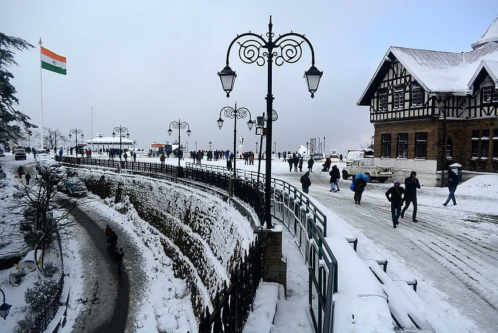
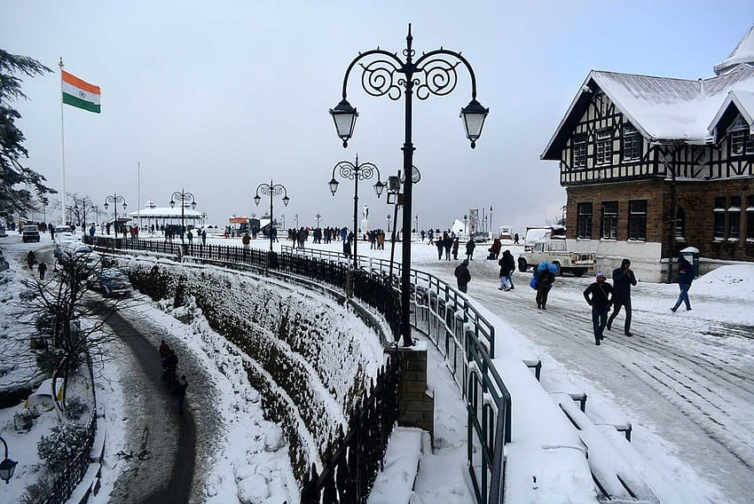

Places

Simla
Shimla Places to visit in Shimla Top Things to Do in Shimla, India Places to Visit in Shimla Explore popular experiences See what other travellers like to do
Price:4000$[Per Ticket]

Meghalaya
Meghalaya Places to visit in Shimla Top Things to Do in Shimla, India Places to Visit in Shimla Explore popular experiences See what other travellers like to do
Price:4000$[Per Ticket]
Kashmir
Kashmir Places to visit in Shimla Top Things to Do in Shimla, India Places to Visit in Shimla Explore popular experiences See what other travellers like to do
Price:4000$[Per Ticket]

Tamilnadu
Tamilnadu Places to visit in Shimla Top Things to Do in Shimla, India Places to Visit in Shimla Explore popular experiences See what other travellers like to do
Price:4000$[Per Ticket]

Kerala
Kerala Places to visit in Shimla Top Things to Do in Shimla, India Places to Visit in Shimla Explore popular experiences See what other travellers like to do
Price:4000$[Per Ticket]

Rajasthan
Rajasthan Places to visit in Shimla Top Things to Do in Shimla, India Places to Visit in Shimla Explore popular experiences See what other travellers like to do
Price:4000$[Per Ticket]
About Us
Here's a list of the top 75 Best Tourist Places to See in India for a perfect holiday or a trip to India. India is a land of a variety of destinations from hill stations to beaches to spiritual places and more. India is the 7th largest country in the world and 2nd largest in terms of population. India is known for its unity in diversity.
Here's a list of the top 75 Best Tourist Places to See in India for a perfect holiday or a trip to India. India is a land of a variety of destinations from hill stations to beaches to spiritual places and more. India is the 7th largest country in the world and 2nd largest in terms of population. India is known for its unity in diversity.
Here's a list of the top 75 Best Tourist Places to See in India for a perfect holiday or a trip to India. India is a land of a variety of destinations from hill stations to beaches to spiritual places and more. India is the 7th largest country in the world and 2nd largest in terms of population. India is known for its unity in diversity.